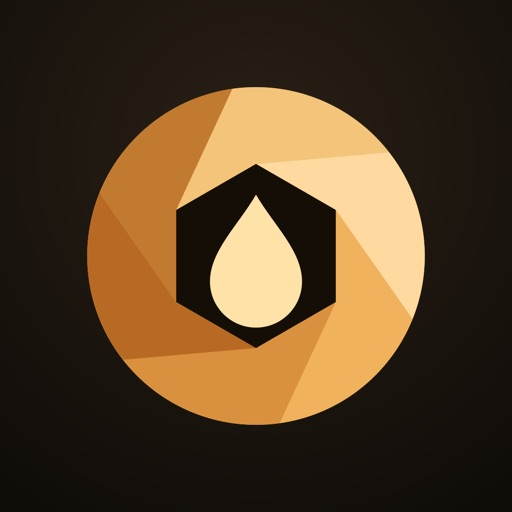

Where are my photos stored?
Photos you capture are stored in the app library. You can also save them to the Photos app on your iPhone if you choose to.

Kahroba RAW Camera DownloadKahroba is a RAW camera for iPhone. Shoot RAW and JPEG with Pro controls and a lens picker. Review your photos in the built-in gallery and Viewer. Then refine them in a full non-destructive editor — Tone, Look, Color, Texture, and Crop. Your original RAW is never changed.
Photos you capture are stored in the app library. You can also save them to the Photos app on your iPhone if you choose to.
Camera access is used only to capture photos. Photo Library access is used only to save photos when you ask the app to do so.
Open Settings in the app and use Reset Camera to restore camera settings to their defaults.
No. Edits are non-destructive. The original RAW is never changed.
For questions or support, email najafi.jalal.cse@gmail.com.